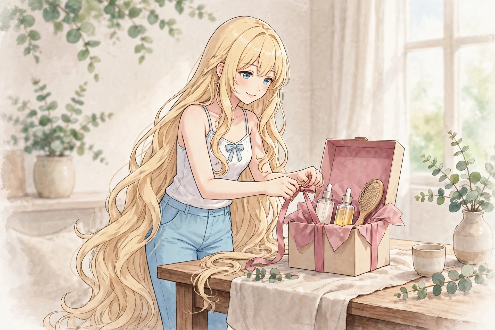

トップ ＞ ヘアケア ＞ ヘアケアをプレゼントする時の選び方
ヘアケアをプレゼントする時の選び方

ヘアケアアイテムは、日常で必ず使うものなので、プレゼントの候補にしやすい品です。ただ、髪の長さや量によって向き不向きがはっきり分かれるカテゴリでもあります。この記事では、贈る側の視点での確認点を整理します。
相手の髪の長さと量から考える
ロングヘア向けのアイテムを、短い髪の方に贈っても、出番は少なくなります。相手の髪の長さ、量、普段の結び方などを思い浮かべてから選ぶのが基本です。相手の髪型をよく知らない場合は、長さを選ばない、タオルやブラシといった道具類の方が無難な選択になります。
相手が美容室で買っているものを使っていると知っている場合は、無理に別のものを贈らず、道具や消耗品に寄せる判断もできます。
香りは控えめ、サイズは使い切りやすく
シャンプーやトリートメントを贈る場合は、香りの強さが控えめなものを基準にします。香りは、洗う時間だけでなく、その後の数時間にわたって残るため、好みの影響が大きい要素です。
サイズは、使い切りやすい小さめが向きます。初めて使う相手にとっては、試しやすい量であることが、気持ちの負担を減らします。使用期限の表示を確認し、余裕のあるものを選ぶのも配慮です。
道具は、好みが出にくい贈り物
ブラシ、ヘアタオル、シュシュのような道具は、香りや質感の好みに左右されにくく、贈り物として安定した選択肢です。ブラシは、相手の髪の長さに合う大きさを選ぶと、実際に使ってもらいやすくなります。
贈るときは「香りは控えめのものを選んだよ」と一言添えると、相手は安心して使い始められます。
相手の好みを知る手がかりとして、普段の会話の中で、行きつけの美容室の話や、使っているものの話が出たときに覚えておく方法があります。無理に聞き出すのではなく、自然な会話の中で得た情報が、選び方の精度を上げます。家族への贈り物であれば、共有の棚にあるものの減り方を見ることもできます。渡す場面では、使い方のポイントを一言添えると親切です。「乾かす前に使うものだよ」「香りは控えめな方だよ」といった短い説明があるだけで、相手は迷わず使い始められます。贈り物は、品物と、選び方の情報と、ひと言のセットで完成するものだと思います。贈る相手が家族の場合は、共有の棚に置くのか、相手専用にするのかも、渡すときに伝えておくと混乱がありません。相手の髪を日常的に目にする家族だからこそ、長さや量に合った選び方がしやすい関係でもあります。近しい間柄の贈り物ほど、実用性の高い選び方が喜ばれます。

セラフィナ「ヘアケアの贈り物は、相手の髪の長さから。迷ったらブラシやタオルの道具が無難だね」